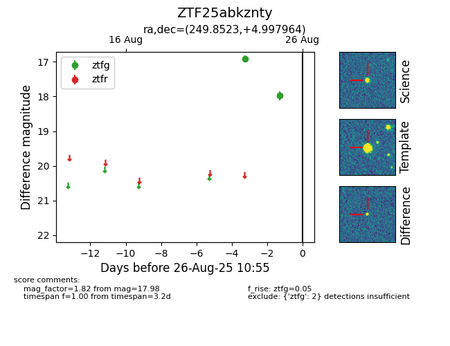

Target ZTF25abkznty at 2025-08-26 10:55, see:
FINK: fink-portal.org/ZTF25abkznty
Lasair: lasair-ztf.lsst.ac.uk/objects/ZTF25abkznty
ALeRCE: alerce.online/object/ZTF25abkznty
alt names
ZTF25abkznty (ztf,fink)
coordinates:
equatorial (ra, dec) = (249.8523,+4.99796)
galactic (l, b) = (21.4354,+31.51341)
photometry
last ztfg=17.98
2 ztfg detections
